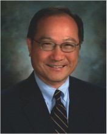

Please note: the AAS Obituaries are temporarily being hosted on this website while their full content is being ingested into the PubPub publishing platform newly adopted by the Bulletin of the American Astronomical Society. When the migration is complete, your existing links will take you to the final, migrated content. Contact peter.williams@aas.org with any questions.
Kwok-Yung (Fred) Lo (1947-2016)
Kwok-Yung (Fred) Lo, renowned radio astronomer and former director of the National Radio Astronomy Observatory, died on 16 December 2016, at age 69, from complications associated with cancer. Born on 19 October 1947 in Nanjing, China, Fred Lo arrived in the United States in 1965 to attend the Massachusetts Institute of Technology (MIT). He graduated with a B.S. in Physics in 1969 and a Ph.D., also in Physics, in 1974. His thesis, Interstellar Microwave Radiation and Early Stellar Evolution, was supervised by Bernard F. Burke, co-discoverer (with Kenneth Franklin) of radio emission from Jupiter.
In a 2008 interview, Lo admitted that upon entering his graduate studies at MIT, he “really had very little knowledge of astronomy at all, let alone radio astronomy, [and was] thinking of doing something practical, like solid-state physics.” But the work appealed to him and he settled on radio astronomy as his professional focus. Lo joined the California Institute of Technology (Caltech) in 1974 as a Research Fellow in Radio Astronomy, but left in 1976 to take up a Miller Fellowship at the University of California, Berkeley. Two years later, he returned to Caltech as a Senior Research Fellow and was appointed Assistant Professor of Astronomy in 1980.
Lo was an accomplished radio astronomer and physicist whose research impacted international scientific progress across multiple fields. His interests ranged from mega-masers to star formation, starbursts, the Galactic Center, and cosmology. At Caltech, Lo made pioneering very long baseline interferometry (VLBI) studies of H2 O and OH maser emission regions with Burke and others. He made the first attempt to detect compact structure in SgrA* by VLBI. Numerous VLBI studies of SgrA* followed, involving many collaborators. He played a leading role in all three areas but is particularly remembered for the classic VLBI studies of SgrA*, the radio source associated with the supermassive black hole at the Galactic Center. These showed that at centimeter wavelengths the observed size of the radio source is dominated by interstellar scattering, thus demonstrating that millimeter VLBI would be needed to study this object at radio wavelengths, a basic characteristic of today’s Event Horizon Telescope.
Lo also played a key role in the early construction of Caltech’s Owens Valley Millimeter Wave Array, leading the observations that produced the first millimeter-wave interferometric map of carbon dioxide emission from an external galaxy. In 1986, he and Mark Claussen were the first to suggest that luminous water maser emission in external galaxies is circum-nuclear, associated with active galactic nuclei, and could serve as very high resolution probes of the centers of galaxies. These keen insights led eventually to the Megamaser Cosmology Project that is now accurately measuring the expansion rate of the Universe and that will yield a direct test of the standard cosmological model and meaningfully constrain the nature of dark energy; Lo was a driving intellect in the project.
In 1986, Lo joined the University of Illinois Astronomy Department as a full professor. There he established a mm/submm receiver laboratory in collaboration with the Illinois solid state physics program, enabling construction of the first superconductor–insulator–superconductor (SIS) junctions for the Berkeley-Illinois-Maryland Array. The lab also worked with the University of Chicago on receiver development for the South Pole Telescope. When Lo later became chair of the Astronomy Department, one of his major goals was to increase interest in astronomy among freshman students. In this context, he developed and oversaw a course in which 12-15 students came to professors' homes to discuss hot topics in astronomy and astrophysics in an informal atmosphere. At the same time, he was very conscious of increasing diversity and made significant efforts to increase the representation of women on the faculty.
Starting in 1990, Lo formed a core group that included Paul Ho, Typhoon Lee, Frank Shu, and Chi Yuan to found what became Academia Sinica's Institute of Astronomy and Astrophysics (ASIAA). in Taiwan. Lo’s commitment to this effort is reflected in his service as Distinguished Research Fellow and Director of ASIAA from 1997 to 2002. In 1998 he was elected as an Academician of Academia Sinica and appointed Professor of Physics at the National Taiwan University. His directorship at ASIAA saw a remarkable expansion of Taiwanese participation in the some of the most important radio astronomy projects in the world: the Berkeley-Illinois-Maryland mm-wave array in Hat Creek California; the Harvard-Smithsonian Submillimeter-wave Array in Hawaii, and the international Atacama Large Millimeter-wave Array in Chile.
Lo’s eminence as a scientist and scientific leader led to his appointment as National Radio Astronomy Observatory (NRAO) Director and Distinguished Astronomer from September 2002 to May 2012, an important decade during which the NRAO and its international partners realized the construction and initiation of science operations with the Atacama Large Millimeter/submillimeter Array (ALMA). His directorship also encompassed the Expanded Very Large Array (EVLA) project. This was completed on time, to specification, and under budget, enabling the reincarnation of the 1970s-era VLA as the much more capable Karl G. Jansky Very Large Array. In addition, the Green Bank Telescope and the Very Long Baseline Array made extraordinary progress in their scientific capabilities and productivity. Lo’s vision and leadership were vital to each of these major NRAO technical and scientific successes. His force of character and remarkable intellect made him a notable leader in our profession, across many arenas and over several decades.
Beginning in 2014, Lo became an advisor to Astron Solutions Corporation, a company founded by Frank Shu to use molten salt technology to help mitigate climate change. Lo's role was especially important in addressing environmental problems in Hong Kong, where he had grown up and still had many friends and influential contacts in the academic and private sectors. He took this new venture very seriously and even when he was gravely ill, still had energy to think of others.
Many people have commented that, like it or not, you knew where you stood with Fred Lo, and you knew what he thought, and why. He was a wellspring of ideas and impatient to see them realized. But no matter how hard he drove his colleagues, none ever questioned his motivation: excellence in science. His piercing questions in colloquia were always matched by patient explanation in private, especially for younger researchers. He is truly missed.
Lo is survived by his wife Helen, their sons Jan and Derek, his mother, Ju Hwa Lu, and his brothers K.J., Steve, Kevin, and Alvin Lo and their wives and children.
Photo: NRAO
Obituary written by: Anneila I. Sargent (Caltech), Paul A. Vanden Bout (NRAO)
Additional links:
BAAS Citation: BAAS, 2016, 48, 005